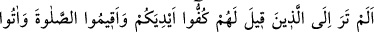
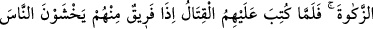
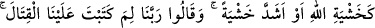
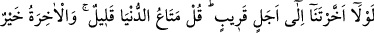
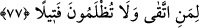

Güzelliği olup da sehaveti olmayana benzer
“İnsan hiddetli olduğu zaman, onu küçük çocukların topacı çevirdiği gibi çeviririz.
Ölüleri bile diriltse, bizce önemsizdir.”
Bir dost bir günah işlerse
O bir günah yüzünden onu incitmek olmaz
Eğer özür dilerse senden
Kızgınlığını yenmendir sana düşen
Çünkü akıllıların yanında, beterdir
Affetmemek; günah işlemekten
“Sarhoş olduğunda ise keçinin kulağı tutularak oraya buraya götürüldüğü gibi,
istediğimiz yere sürükleriz.”
Ey kötü kişi, şarap aklı yok eder
O halde ne zamana kadar içmeye devam edeceksin?
İnsanın bedeninde akıl olması gereklidir
Yoksa senin gibi, eşeğin vücudunda da can var
Şu halde akıllı olan, Allah yolunda cihâd etmelidir. Çünkü hakîkat üzere mücâhede,
nefsin istîlâ ederek zayıf düşürdüğü rûhu kuvvetlendirir. Akıllı insan, halkı -yani
durmadan kötülüğü emreden nefs- zâlim olan beden diyarından çıkmak için, sıdk ve
sebât ile Allah’a yakarmalı ve ruh makamında Allah’ın dostluğu ile şereflenmelidir.
Allah bize de size de fütûhât kapılarının açılmasını nasîb eylesin. Âmîn, ey bütün
zorlukları kolaylaştıran Rabbim!
77- Kendilerine, “Ellerinizi savaştan çekin, namazı kılın ve zekâtı verin” denilen
kimseleri görmedin mi? Sonra onlara savaş farz kılınınca, içlerinden bir gurup
hemen Allah’tan korkar gibi, hatta daha fazla bir korku ile insanlardan korkmaya
başladılar da «Rabbimiz! Savaşı bize niçin yazdın! Bizi yakın bir süreye kadar